Relatar um Problema Abra um ticket sobre erros em sistemas, softwares, falha de equipamentos ou acessos. Abrir solicitação 02 / ATENDIMENTO LOCAL
Solicitar Atendimento Presencial Solicite a presença de um técnico para reparo de infraestrutura, cabeamento, rede ou elétrica na FURIA. Solicitar visita técnica